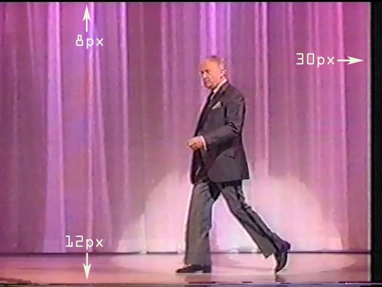

Masking video artefacts
The problem
I needed to show a YouTube video to prove a point in a presentation. The video, however, was of low quality, was not cropped correctly, and had flickering video artefacts at the bottom. Being of a rather pedantic character, I decided to spend hours rectifying the more obvious shortcomings of the video; all for the few minutes it would take to show it to my audience. Finally I ended up spending even more precious time to explain my procedure here.
Fig. 1. The original 640x480 pixels video with border artefacts top, right and bottom.
With a higher quality video I would probably have used video software to get rid of the annoying borders, but the crappy quality of the original would have suffered further disintegration by an additional compression. HTML and CSS to the rescue, helped by a few lines of JavaScript.
Note: For this to work (without generic div tags) the browser must recognize the HTML5+ figure, video, and figcaption tags, and the calc() function in CSS3+. And JavaScript must be enabled. Note also that the provided video example is in the MP4 format. As this will not play in all browsers, a production web page should offer options like WebM and OGG.
A solution
Embedding a video tag inside a figure tag inside an html tag, achieves two things: Semantic logic is built right in, and figure can be used as a parent for video, hiding (in our case) crap by specifying overflow:hidden in CSS.
In theory, our video could be positioned within a 640-30=610 by 480-8-12=460 pixels figure container, thus camouflaging all artefacts. The only problem being that once controls are speced in the video tag, they would be partly hidden, be visually ugly and difficult or impossible to operate.
Fig. 2. Controls partly masked out in Safari.
The following may sound counterproductive, but what if we scrap the default controls and add our own? And use figcaption (which is also within the figure container) as a wrapper for controls as well as caption text? This is doable if the figcaption (positioned higher in the stack than the video) is pushed upwards, hiding bottom crap in the video. An added benefit (or excuse) is that custom controls allow for identical visual appearance in a plethora of browsers.
My initial thought was to use an icon font for play and pause “buttons”, building on an earlier article on Google’s material icons. Icon fonts have technical ideographs with (more or less) true and tested symbols. Ideographs behave like other characters in in-line text and can be easily hovered over and colourized. Another option would be to use a font with perceived Unicode alternatives, e.g. the Black right-pointing triangle (▶, ▶) to allude a play button and a Black square (◼, ◼) to stop the video along the way. Note that the Double vertical bar (aka Pause, ⏸) was only passed by Unicode in 2014 and is even more rare than the triangle and square in many fonts. The latter two have been with us since 1993.
As an afterthought to said article, I must admit that I now lean towards SVG with theses material icons. The Google repository lacks font formats to support all browsers in general and it is huge; the filled regular version clocks in at 231 kB with its close to 1000 designs, the main part of which I will never need. Astronomic compared to in-line SVG (which does not require an additional HTTP request either). I have the discomforting feeling that the repository is no longer updated, both because of the lack of font format alternatives and the fact that the icons make use of the enable-background attribute which has been deprecated since SVG 2.
Downsides of in-line SVG are that a) more thought (discussable, of course) needs to go into its implementation, b) the browser can not cache the code (as it would a normal, external image), and c) for larger images the encoded URL can become exhaustively long (i.e. it makes for a visually intricate HTML).
To circumvent the font problem for this here implementation, I decided to use in-line SVG code ripped from the SVG versions of the material icons Play circle filled and Pause circle filled.
The custom controls
Thus looks a regular HTML5 video tag with controls:
<video src="...[path to video].../myVideo.mp4" type="video/mp4" width="640" height="480" poster="...[path to image].../image.jpg" controls preload="none"></video>In the accompanying demo, preloading is not activated. Both because the video is merely a snippet but also because of the fact that not all users will get to the point of actually running it. It may therefore be rude to spend their precious bandwidth mindlessly.
The type attribute (type="video/mp4") has also been ditched. Even though it helps the user agent to determine if it can actually play a media resource before fetching it, this attribute makes most sense when dealing with multiple sources catering to different browsers.
And, the controls attribute goes missing because customization is the name of the game here.
To visually indicate what the video is (more or less) about, a poster image of Mozart has been speced in the video tag.
Final code
Demo page HTML:
<figure id="customControls">
<video src="vb.m4v" width="640" height="480" poster="mozart.jpg" preload="none"></video>
<figcaption>
<a href="#">
<svg id="startStop"><path d="M0 0h24v24H0V0z" fill="none"/><path d="M12 2C6.48 2 2 6.48 2 12s4.48 10 10 10 10-4.48 10-10S17.52 2 12 2zm-2 14.5v-9l6 4.5-6 4.5z"/></svg>
</a>
Victor Borge on Mozart
</figcaption>
</figure>The accompanying CSS (see page source for comments):
figure {
position: absolute; top: 0; right: 0; bottom: 0; left: 0; margin: auto;
width: calc(640px - 30px);
height: calc(480px - 8px - 12px + 36px);
overflow: hidden;
}
video {
position: relative;
top: -8px;
left: 0;
}
figcaption {
position: absolute;
top: calc(480px - 8px - 12px);
width: calc(640px - 30px);
height: 36px;
font-size: 1.8rem;
line-height: 36px;
color: #eef5df;
background-color: #000;
}
svg {
position: relative;
top: .3em;
width: 24px;
height: 24px;
margin: 0 .5em;
fill: #475f14;
}The necessary JavaScript (see page source for comments and references):
var videoContainer = document.getElementById("customControls");
var video = videoContainer.querySelector("video");
var controls = videoContainer.querySelector("figcaption");
var playPause = controls.querySelector("a");
playPause.addEventListener("click", function(e) {
e.preventDefault()
if (video.paused) {
video.play();
playPause.innerHTML = '<svg id="startStop"><g><rect fill="none"/><rect fill="none"/><rect fill="none"/></g><g><g/><path d="M12,2C6.48,2,2,6.48,2,12s4.48,10,10,10s10-4.48,10-10S17.52,2,12,2z M11,16H9V8h2V16z M15,16h-2V8h2V16z"/></g></svg>';
document.getElementById("startStop").style.fill = "#900";
} else {
video.pause();
playPause.innerHTML = '<svg id="startStop"><path d="M0 0h24v24H0V0z" fill="none"/><path d="M12 2C6.48 2 2 6.48 2 12s4.48 10 10 10 10-4.48 10-10S17.52 2 12 2zm-2 14.5v-9l6 4.5-6 4.5z"/></svg>';
document.getElementById("startStop").style.fill = "#475f14";
}})
video.addEventListener("ended", theEnd, false);
function theEnd(e) {
playPause.innerHTML = '<svg id="startStop"><path d="M0 0h24v24H0V0z" fill="none"/><path d="M12 2C6.48 2 2 6.48 2 12s4.48 10 10 10 10-4.48 10-10S17.52 2 12 2zm-2 14.5v-9l6 4.5-6 4.5z"/></svg>';
document.getElementById("startStop").style.fill = "#475f14";
}MP4 vs m4v
The demo shows a 5 sec video saved out from the original video. This was done only to proof play/pause when testing; no need for the full video. The open-source HandBrake video converter was used to generate the demo file – which has an m4v suffix. The developers state that M4V and MP4 “are the exact same file, the only difference is the extension.” Often it is possible to simply change the suffix, and the file/content will remain identical. At other times this is not possible. More to the point: M4V files may be protected by Apple’s digital rights management. Renaming to mp4 will then not work. Neither can the file itself be manipulated as the content is encrypted and only playable with Apple-software on the machine it was bought on.
The original video can be seen on YouTube.
A note on rem
The font size in the figure caption on the demo page is set with a rem value. This is only a matter of convenience because rem kills cascading dependencies. No need then, to worry about size whenever a caption is used inside of whatever parent element. With rem, browsers default to root (i.e. 1rem equals 16px). While em or % is relative to the font size of its direct or nearest parent, rem is only relative to the html (root) font size. On the demo page, html is set to a font size of 62.5% (resetting browser std. to 10px) and the figcaption to 1.8rem. For the latter this computes to 16px*0.625*1.8 = 18px.
Work in progress
The glaring omission with this custom control is the lack of a scrubber; the means to skip parts of the video, to go back and forth. While I would normally mumble ‘He must nedys go that the deuell dryues.’, this has already been covered by more knowledgeable people than myself. Where, please, you may say? Well, in Basic programming one would use goto.